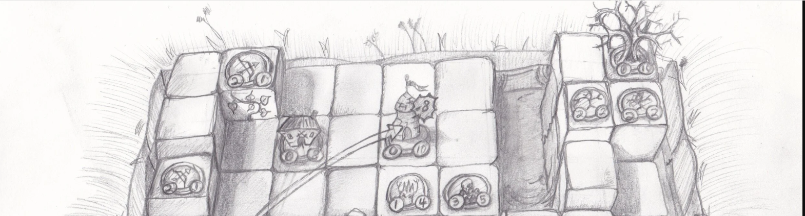
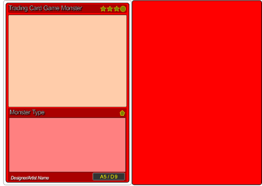
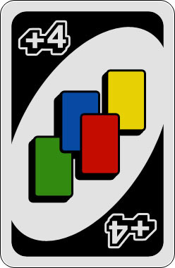
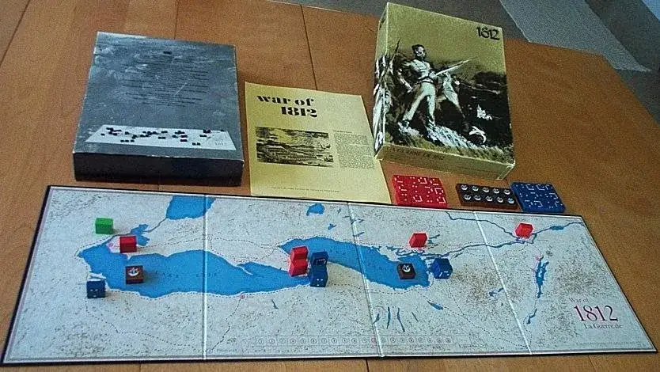

My Board Games

History has shown time and time again that humans will invent new types of entertainment over the years, from the bloody coliseums of old to the video games of the 21st century. However one type has prevailed over the years, Board games.
Traditional board games like Chess have been around for over 5,000 years and people still play them along with games like Checkers, Dominos, and Scrabble today.
However, new ones are made every day by established artists.These things had always interested me when I was little, how a game is made, what thought process was made to come up with these games, they break or bond friendships, it can make us fearful and excited, it can be played by anyone and anything. And you dont need to learn complex code to design it. Hell, you dont even need a complex rule set which is why it's fun. Every board game could be the same but people make it change over time, even Chess has gone through dozens of iterations over its 5,000 years of existence.
Inspired by and what they are
I really like board games that require you to think before you make your next move in the game. Rouge-likes similar to Sun Rot, Strategy-war like War of 1812, and Card games like Uno have always interested me I even made a game similar to Uno called The Game of Fun which was pretty much Uno No Mercy before Uno No Mercy it had draw elevens, reverse plus 2s and bombs, which make you put down one of all color for everyone. While I have way more games then just The Game of Fun I only have time to tell you like 3 more games since most of the games dont have names or use games I already have lying around.

One game I have made is a two set game called Artifactor one:The Rainforest of Blood and Gold and Artifactor two: Curse of Tukuhanas tomb. I made the game because I was inspired by Indiana Jones and that weird mobile game called Temple Run, specifically the trap aspect of both of them. The game consists of each player drawing 5 card items before going into the background of the game in search of either the Tomb of Tukunhana or Blood Idol of the forest. As they search they can use items to avoid traps, or sabotage others in there quest as well. However, every three turns when the Idol or the tomb is not found, an event will happen ehich can either help or discourage the players from there quest, the goal is to the last one out alive with the treasure you seek.
The last game I will show you that I named is called Drawmina which can be played anywhere by anyone as long as they have some dice, pencil, paper, and an eraser. The objective of the game is to make the other player get ten x's by forcing them to draw characters if they have non left or destroying one of there units. You set it up as 3 units facing eachother on either side, you play rock paper sissors to decide who goes first (Who ever goes first cannot attack that turn) and they have 3 actions which they can use to either,
a.)move a unit
b.)attack
c.)interact with the envirmoent/map that has been set up
d.)drawing a unit (takes two turns and half an x)
The game ends once the person gets 10 x's or more imn which they draw there MVP on the back and declare who the winner is.
Games I was inspired by
| Game | Creator/date | Description | Reasons why I like it |
|---|---|---|---|
|
Uno
 |
Mattel, 1971 | Uno is a game that can ruin friendships, you have to think before you put down your next card, you want to lose all your cards before the others. | It's easy to learn and play, rounds are usually quick, unlike most card games it also requires skill rather than just blatant luck. |
|
War of 1812
 |
Gamma two games, 1973 | It's in the name, A game about strategy and conquest between British forces and American soldiers. | Inspired by a real event, models are neat, you can play a game even without actually playing it. |